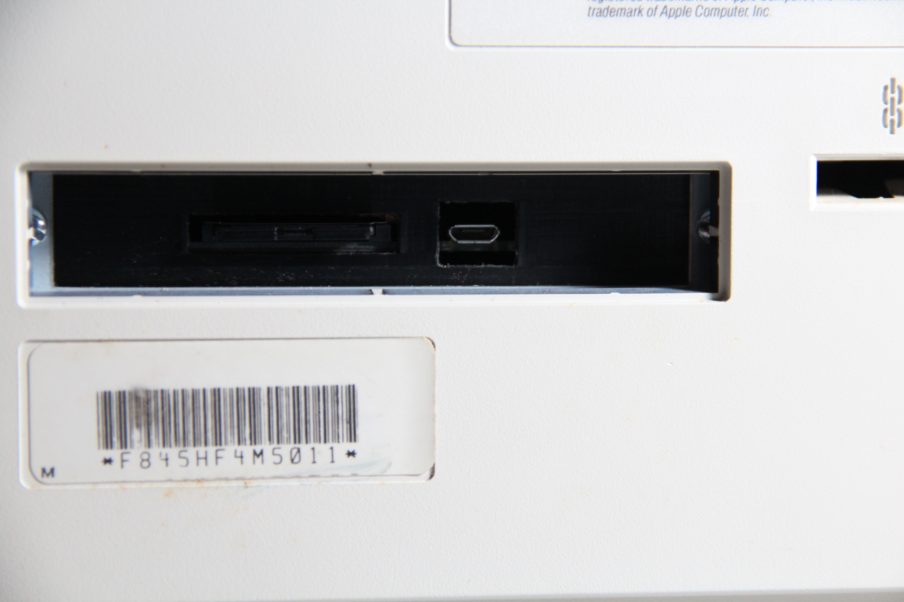

The first retro computer I acquired was the iMac G3. I never intended to go much further down this path - the iMac G3 was a special part of my childhood, but I can’t say I was in any position to be using a computer in 1987. So why the Macintosh SE?
It was free!
My desk at work had a non-working Macintosh SE Superdrive next to it as decoration. The company took advantage of everyone working from home and started a remodel with an emphasis on reducing clutter. Since whoever brought it into the office had long since departed, I asked our President if I could take it home to fix, and I got approval as long as I sent pictures. Below is the picture I sent.
Unfortunately, the Macintosh SE was the victim of one of the worst (in my opinion) design decisions in Apple history. Previous models had a nice little compartment with an alkaline battery:

In what I imagine was a decision focused on a clean design, the battery was changed to lithium and moved inside the computer onto the logic board. Now, if it needed to be changed, a special tool (T15 driver well over a foot long) would be needed to access an area with high voltage, potentially lethal, components.
And if someone had gotten that far, they’d still need to remove the logic board, desolder the battery (because it was now soldered onto the board), and solder a new one in place. Otherwise, the battery would explode and destroy everything.
I’m going to put as much of that computer as possible to good use. But at this point, I was already attached to the idea of owning a Macintosh SE. It has a hard drive, so I can store data without needing a collection of floppy disks. It has a fan, so I won’t have to be as concerned about it burning up as other older models. And it was the first Seinfled Macintosh!
At this point, I was sold on Macintosh SE ownership, so I turned to Facebook Marketplace. The computer I purchased was sold by the original owner. Back in the 80s, she was writing trivia for the show Cheers and needed to share files with the other writers. And that’s why this computer was first purchased! It’s always interesting to hear the history of these machines, and I make sure to ask anytime I’m meeting with a seller.
And after letting the seller know about my battery issue, they were happy to let me open it up and confirm nothing had exploded. As it turns out, the West Germans knew how to make reliable batteries!
But it’s not just batteries that can leak unpleasant goo - computers are also full of electrolytic capacitors. Some are more prone to leaking than others, but there’s a shelf life, and I didn’t want to have to check in on components one by one, especially since they were already 33 years old. So while I had the computer open, I went ahead and did some much needed dusting and replaced every electrolytic capacitor. I didn’t do anything new here, and I’d just be repeating what others online have said much before. Definitely check out JDW on YouTube if you have more interest. His videos are longer than I ever thought I’d watch, more thorough than I deserve, and made with love. He also maintains lists of components and their part numbers, which makes ordering from Digi-Key or Mouser a breeze.
The logic board was rather dusty.

All the other components got removed too. And in case you’re new to these computers, that CRT had to be discharged. I consumed as much information as possible on that matter for what must’ve been a couple weeks before trying my hand at discharging.
That picture doesn’t really show how bad my office was getting . . .
Turning the power supply on after replacing all the capacitors made me nervous, but that also didn’t kill me yet, and you can see my voltage output adjustments below. JDW has a great video I followed basically step by step.
One other thing of note is I replaced the fan. Apparently fan technology has gotten quieter. And the original was quite dusty anyways. Here it was before:
You can also see how crowded that computer was before I made my desk a mess. Here’s the new fan:
I didn’t take any pictures of my floppy drive restoration, but you can see exactly what I did on JDW’s channel. Although, I’ll admit, I didn’t look at anything under a microscope. There’s a really tiny gear that has a habit of breaking, and I ended up having to order a replacement from Shapeways because they have fancier printers than I can get my hands on.
And last but not least, I replaced the original harddrive with a SCSI2SD. While spinning disks are fun, I have absolutely no trust in ones that were made before a unified Germany. I actually plan on using this computer for things, after all. This video demonstrated an interesting mount for it. And a friend was able to 3D print me a few since it’s just a few big rectangles!

I’ll keep the rest short - I put it all back together and I somehow didn’t break everything! Check out some pictures below:


Welcome To Macintosh is my favorite piece of software so far. It’s so interesting to consider how this was likely someone’s first experience with a GUI. I don’t think my family had a home computer until Windows 98, and at school we used Mac OS 9.
Now, something I did that JDW hasn’t (yet) covered: I ended up replacing the capacitors in the mouse and keyboard. You can find a list of capacitor values off to the left of my website or at this link.
The keyboard is an M0116 and arrived very dirty from eBay. It worked, though, so I can’t complain!
I wasn’t quite sure what those light blue components were to the left of the chip. They were labeled as capacitors, but I had no idea what kind and if they would need replacing.
I removed one and it was marked CGW 270 J1L 649. If you’re like me, you have no idea what that means. I found that CGW stood for Corning Glass Works, and they made glass dielectric capacitors for a while. I read that they sold their capacitor operations to AVX. Since I couldn’t find much documentation, I called AVX. The person who answered was way nicer to me than I expected with such a dumb question, but it ultimately went nowhere. An electrical engineer friend recommended I check the chip pinout, so I found a datasheet for the Intel MCS-48 family, which contained the Intel 8048. Following traces on the board, I could confirm that the capacitors were for pins 2 and 3.
It’s been a while, but I think I figured out the rest from old AVX and CGW part numbers. The final digit, 0, in 270 means that there is no additional number of 0’s. And 27 means 27pf, which is in line with the 20pf capacitance in the datasheet. From my notes, I think I determined that the J in J1L was the tolerance, and CGW considered J to mean 2% tolerance. AVX now considers J to mean 5% tolerance. And the 1L in J1L seems to mean it’s rated for 100 volts, at least based on CGW glass dielectric capacitors with known voltage ratings and part numbers. 649 might be some kind of date code or size, but I had all the information I needed. Also, it’s not like a glass dielectric capacitor was going to leak electrolytic fluid, and its capacitance was as expected on my multimeter, so I just soldered it back in and considered that to be time well spent.
I also got the A9M0331 mice ready for capacitor replacements. I learned my lesson with the keyboard rabbit holes and didn’t let my eyes wander far from the two electrolytic capacitors.
Everything went back together fine, although the Q key didn’t register on the keyboard. The leaf in the switch needed a bit of bending. You can see the Tab switch opened up below. I was comparing the two.
And here’s one more picture of everything together!
This project took a lot longer than expected. Look how much cleaner my desk is now!
Of course, it will soon be cluttered again as I embark on more projects. I have a huge collection of Commodore computers that I’ll write about a bit later. I’m excited to work on some computers that don’t have CRTs.
This Macintosh SE will be used for some security research over the next few months. I hope I discover something worth writing about. If any of this was of value or if I can answer any questions, feel free to reach out to my LinkedIn! And if you have any additional information on that CGW capacitor, I would especially enjoy speaking with you.